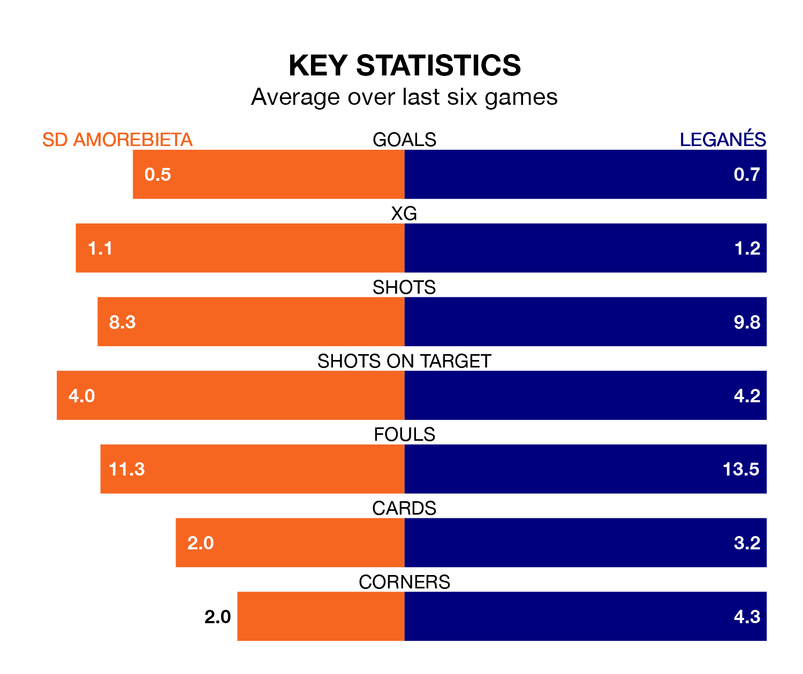

Leganés travel to Instalaciones de Lezama Campo 2 for Monday's late match against SD Amorebieta looking to bounce back from defeat last time out in the Segunda División.
Leganés, who sit top of the league after 29 games, fell to a 2-0 home defeat to SD Eibar on March 3.
They face an Amorebieta side who picked up a win in their last match, a 1-0 victory against Real Zaragoza, and who sit 22nd in the table.
With 22 goals in 29 games so far this season, Amorebieta are the league's joint-second-lowest scorers with 0.8 goals per game. And they are conceding more than average, letting in 37 goals at a rate of 1.3 per game.
Leganés, meanwhile, are above average scorers, with 1.4 goals per game, compared to a league average of 1.1. They have conceded 0.7 goals per game.
With Diego Conde between the sticks, the away team can rely on one of the league's safest pair of hands. He has kept 12 clean sheets in his 27 appearances this season, and only one other 'keeper – SD Huesca's Álvaro Fernández – has been able to prevent the opposition scoring on more occasions in the Segunda División.
In the hosts' net, Pablo Cuñat Campos has seven clean sheets in 25 games. He has conceded a goal every 87 minutes, 50% more often than the 131 minutes between goals for Conde Alcolado.
Amorebieta are in mixed form in the Segunda División, with two wins and two draws from their last six games.
With a win and two draws over that period, Leganés's form is worse – they have taken five points from 18, compared to Amorebieta's eight.
In the last three years, Amorebieta and Leganés have played each other on three occasions. Leganés won all of them.
Their last meeting was on October 15, when Leganés won 6-0 at home.
Monday's match will be refereed by Salvador Lax Franco, who has taken charge of 15 Segunda División games so far this season, issuing two red cards and booking 59 players. He has awarded two penalties.
The last Amorebieta game Lax Franco refereed was a 2-0 home win against CD Tenerife on November 18. His last Leganés match was their 1-0 loss away at Real Zaragoza on December 2.
Updated: 09:34 (UTC), 08/03/24